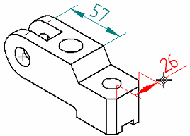
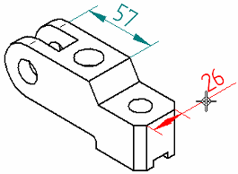
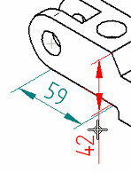

Place a 3D dimension on a pictorial drawing view
You can place a 3D dimension, that is, a dimension that uses the associative model to determine true distance, rather than the space on the 2D drawing, in a pictorial view. A linear, radial, or angular Smart Dimension can be placed as a 3D dimension.
You cannot place a 3D dimension when a drawing is unlinked or out of date.
You can turn the 3D dimension capability on and off using the Create 3D Dimensions In Pictorial Views check box on the General page of the Drawing View Properties dialog box. By default, 3D dimensions are enabled for pictorial views.
-
Click the Smart Dimension button.

-
Click an element.
-
The command determines which type of dimension to place, depending on the type of element you select, and displays the dimension dynamically so you can position it.
-
You can switch between linear and angular dimensions with the Length and Angle buttons on the command bar.
-
You can also use the A key to place an angular dimension.
-
-
Do one of the following:
-
(Dimension one element) Position the dimension as you want it by moving the cursor. If you are dimensioning a linear element, you also can use the N and B keys to cycle through the planes available to place the dimension.
When you are satisfied, click to place it.


-
(Dimension between elements) Select a second element to dimension the distance between the two elements, and then position the dimension and click to place it.

-
-
You can reposition dimensions by holding Shift and dragging the dimension extension lines. This gives the effect of '3D' extension lines.
-
During angular dimension placement, you can use the Ctrl key or the Major-Minor button on the command bar to display the complement angle.
-
3D dimensions require more processing time and may affect system performance, depending on model size and complexity.
How do I
Example: Dimension the length of a lineExample: Dimension the diameter of a circle
Dimension similarly sized holes
Example: Dimension a curved slot
Place concentric diameter dimensions
Place a feature callout dimension
Define smart feature properties in the Dimension style
Look up more details
Smart Dimension commandSmart Dimension command bar